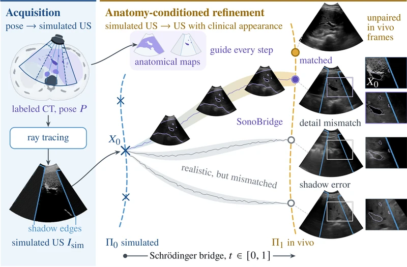
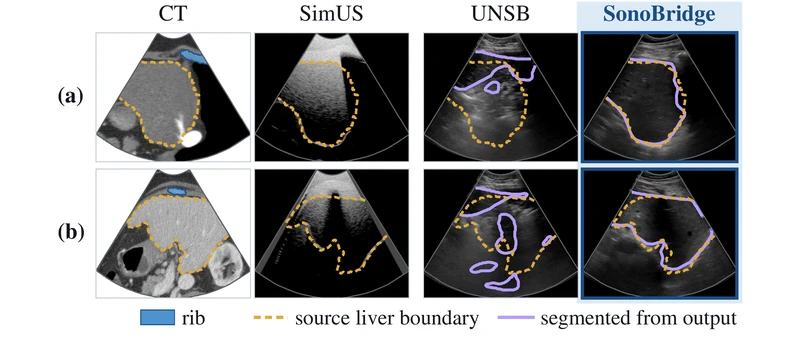

SonoBridge: Anatomy-Conditioned Schrödinger Bridge for Unpaired CT-to-Ultrasound Synthesis
SonoBridge learns clinical appearance from unpaired ultrasound scans and synthesizes new views from labeled CT. Each view retains its probe pose and aligned anatomical labels.
Interactive demo
Move the probe to compare ultrasound with its CT slice and labels. At a fixed pose, adjust shadow area and fine-structure strength.
Liver ultrasound is lightly brightened for display. The patient outline is illustrative.
Method
Virtual acquisition
A virtual probe samples the front of the abdomen for liver views and the back for left kidney views. At each pose with sufficient skin contact, ray-based simulation produces the starting ultrasound image. The CT slice and anatomical labels share the same imaging plane.
Anatomy-conditioned refinement
A Schrödinger bridge refines the simulated image in five steps. Each step uses the full organ mask, including tissue in shadow. Visibility derived from the simulated acquisition limits fine-structure guidance to visible hepatic vessels or renal medulla.
During training, the bridge learns tissue appearance from unpaired clinical scans. The source labels also supervise the anatomy of each prediction in visible tissue.


Results
On liver ultrasound, SonoBridge reduced FID by 19% and KID by 36% relative to UNSB, the strongest of seven baselines on both measures. Liver refinement averaged 23.3 ms per image on one NVIDIA RTX PRO 6000, including preprocessing.
| Method | Liver 1,200 views · 8 cases | Kidney 974 views · 5 cases | ||
|---|---|---|---|---|
| FID | KID | FID | KID | |
| SonoBridge | 59.81 | 4.63 | 33.48 | 1.83 |
| CycleGAN | 161.43 | 25.56 | 51.32 | 4.78 |
| CUT | 81.68 | 9.00 | 39.98 | 1.91 |
| UNSB | 73.80 | 7.22 | 34.46 | 1.94 |
| SynDiff | 118.61 | 14.61 | 84.52 | 10.99 |
| StegoGAN | 92.13 | 8.36 | 79.40 | 9.58 |
| SANTA | 85.73 | 7.63 | 49.91 | 3.51 |
| SASAN | 78.35 | 7.71 | 48.34 | 4.55 |
Lower Fréchet and kernel inception distances (FID and KID) indicate closer agreement with clinical ultrasound in feature space. KID values are scaled by 100.
Anatomical correspondence



The full comparison includes unpaired clinical reference frames selected by similarity.
Resources
Research code and data
We plan to release the research code and the associated dataset.
Citation
Publication details to follow.